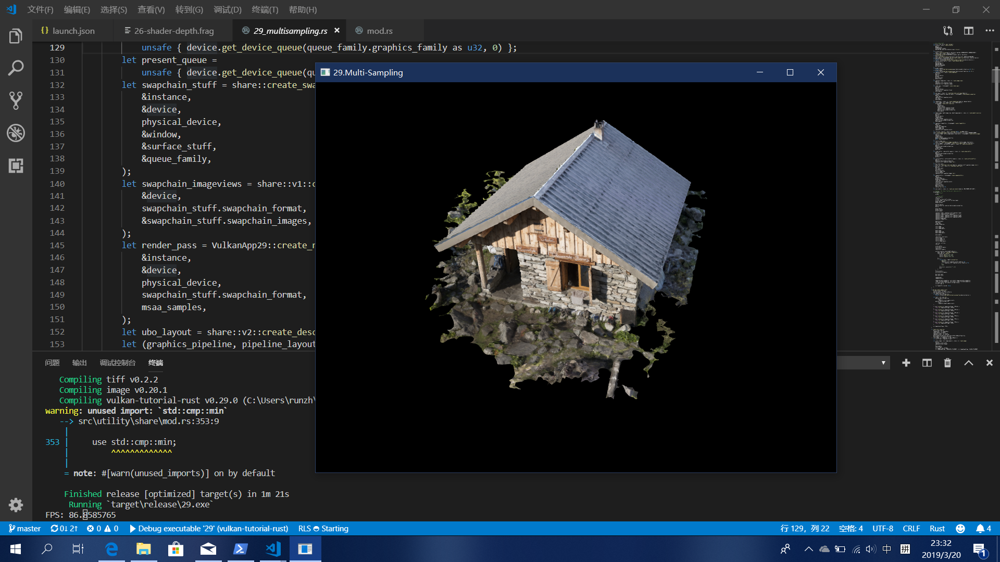

欢迎来到Vulkan的世界
Vulkan 是一个由科纳斯组织(OpenGL,OpenCL都他们家的)开发的,跨众多平台的次世代图形API,大幅降低了CPU/GPU占用,对标巨硬的DX12和苹果的metal. 科纳斯最先把Vulkan API称为glNext，因为是在和巨硬和苹果竞争而OpenGL又显得软弱无力. Vulkan基于AMD Mantle构建(中间多少py交易可想而知)，AMD将其Mantle API捐赠给科纳斯组织，给予该组织开发底层API的基础，使其像OpenGL一样成为行业标准。
俺是农村人,俺读书不多 学这个有什么用?
额(⊙﹏⊙)....其实你要是想学计算机图形学的话可以看看Ray tracing in one week,physically based rendering之类的教程,想学渲染的话其实OpenGL还没有过时,LearnOpenGL CN还是你的选择 但是如果你觉得自己骨骼精奇,OpenGL太捞,喜欢追求性能,想提前部署次世代的技能那么你就是我们的目标!
相对的,付出的代价是您必须使用更加详细的API。 每个与图形API相关的细节都需要由应用程序从头开始设置，包括初始帧缓冲区创建和缓冲区和纹理图像等对象的内存管理等。
还有本教程采用最新的Rust语言进行授课,Rust的好处不用我说了,请自觉上知乎/百度/不存在的网站进行搜索,其实很好入手 如果你是真·小白那么我建议你出门左拐先学了C语言和操作系统之类的,在了解一下显卡的运作方式.
将学会什么?
Vulkan 以及他的Rust绑定Ash,精美的光照,炫酷的后期处理和 逼格. 
前置知识
有显卡 有键盘 有屏幕- 对计算机有了解(知道什么是内存,什么是CPU,他俩怎么一起工作等)
对Rust语言有基本的认知 没学过看书: Rust 程序设计语言 简体中文版 并不一定看完,多少有个认识就行
高中几何学合格,大学线代及格
- 对3D建模有了解